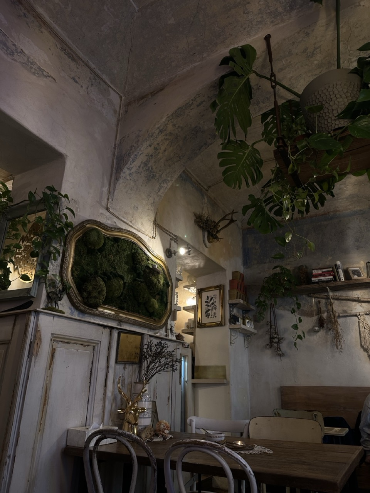
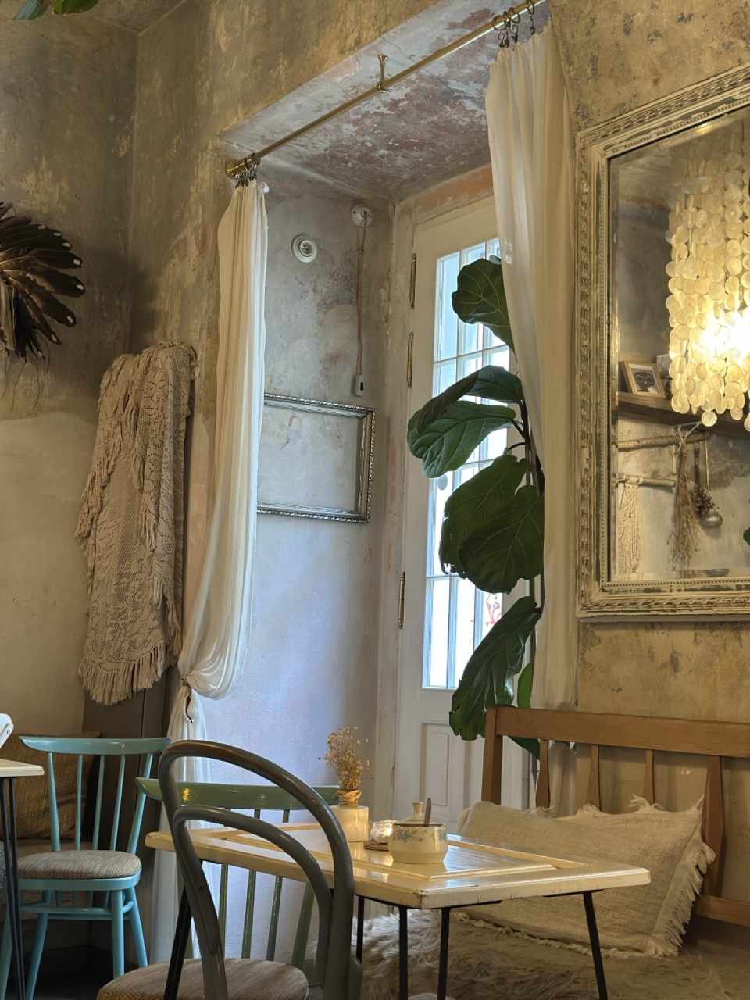
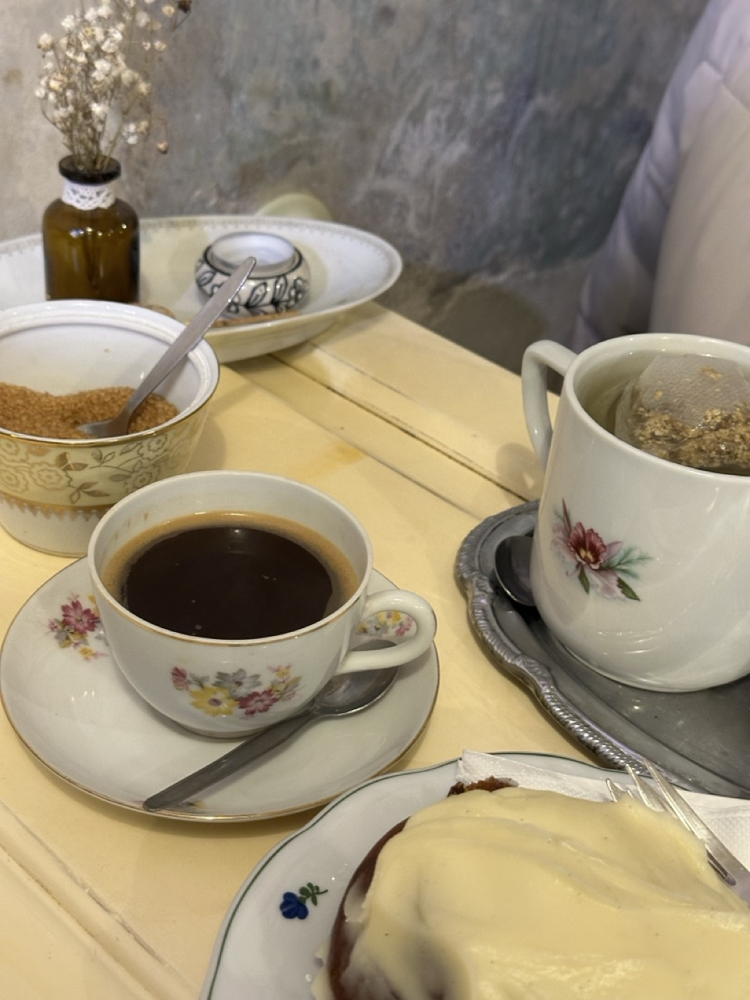
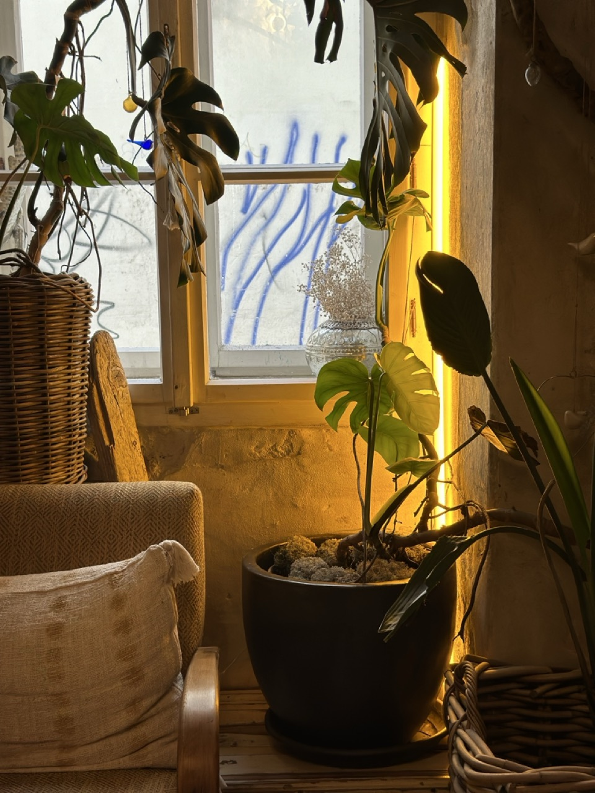
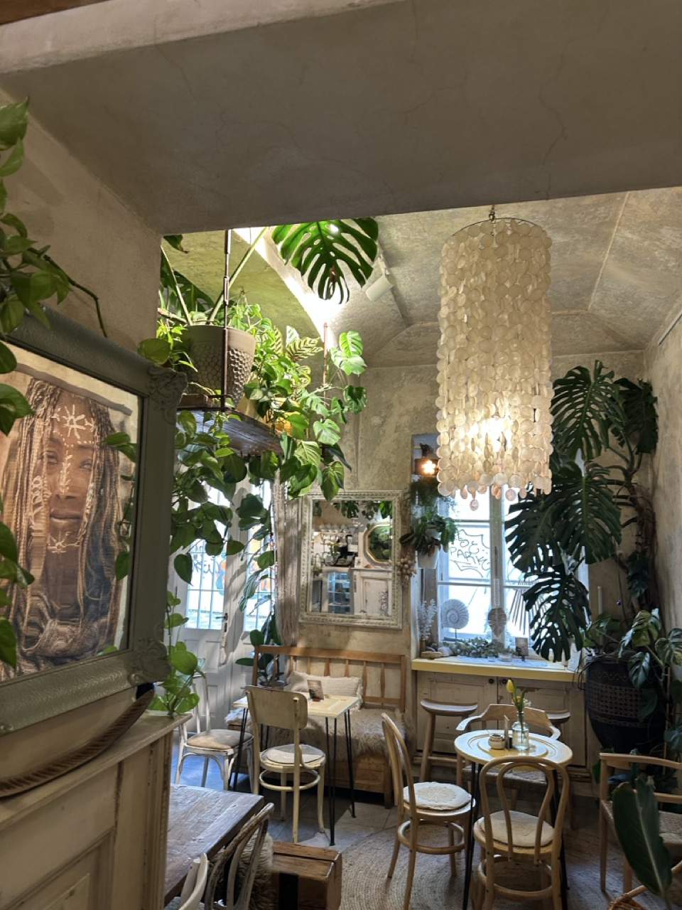

Cocovanka
Cocovanka v Dejvicích patří mezi místa, kde si člověk hned od vstupu zlepší náladu. Interiér je světlý, moderní a promyšlený do detailu, takže působí velmi příjemně jak na rychlou ranní kávu, tak na delší víkendový brunch.
Co stojí za ochutnání
Kromě poctivé výběrové kávy mě tady pokaždé nadchne nabídka snídaní a sladkého pečiva. Všechno působí čerstvě a je vidět, že si na kvalitě surovin i prezentaci dávají opravdu záležet.
Fotogalerie




